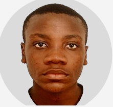

Bienvenue sur mon portfolio ! Je suis Ferancel Iverson DIAHOUILA, un étudiant passionné par les réseaux et télécommunications. Ce site présente mon parcours, mes compétences et mes projets réalisés dans le cadre de ma formation universitaire. N'hésitez pas à explorer les différentes sections pour en savoir plus sur moi et mes réalisations.
J’ai obtenu un baccalauréat scientifique série D, puis j’ai commencé une formation en réseaux et télécommunications au Congo, dans un tronc commun regroupant plusieurs disciplines scientifiques. Souhaitant poursuivre et approfondir ce domaine, je suis venu en France pour continuer mes études supérieures en réseaux et télécommunications.
Depuis mon enfance, j’ai toujours été passionné par la médecine, d’où mon choix de série. C’était mon rêve de gosse : comprendre le corps humain et aider les autres. En grandissant, je me suis rendu compte que j’étais tout autant attiré par les nouvelles technologies et que j’avais la phobie de plein d’équipement ( aiguille, sang et bien d’autre encours). Grâce à mon frère, j’ai découvert la cybersécurité et cela a ouvert une nouvelle voie qui m’a captivé.
Mon ambition est de devenir un professionnel compétent dans le domaine des réseaux, de la cybersécurité ou de l’administration système. À long terme, j’aimerais travailler dans une grande entreprise.
Déterminé, sérieux, autonome et conscient du travail qui m’attend, je suis persuadé que je serais un élément moteur au sein de votre structure grâce à mes compétences et ma motivation. Je suis à la recherche d’une entreprise qui me permettra de mettre en pratique mes compétences et de les développer davantage.